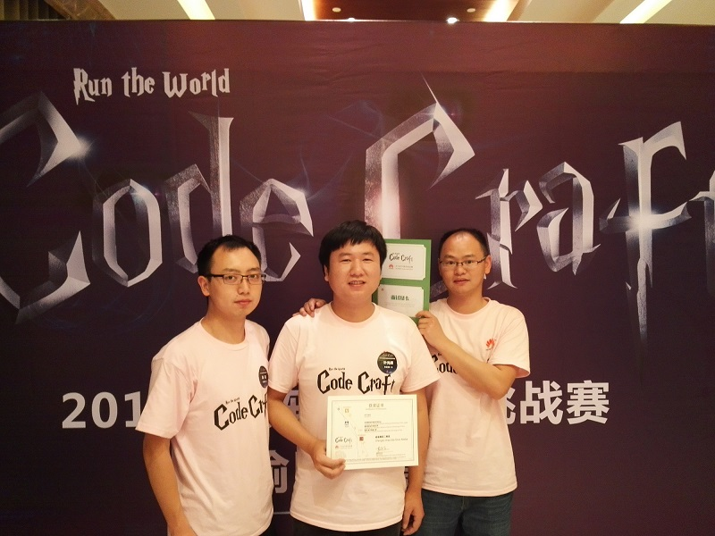

我的2016
0.题外话
回想自己主动写年终总结还是在2012年，果然是人越来越懒了。2016年对我来说应该是比较有转折性的一年。首先对于一个研二到研三的学生来说最重要的恐怕就是秋季校招了。其次在导师公司从2016年3月到2016年6月这段时间基本就是在交接工作（比较消极的话来说就是接手烂摊子(^_^））。此外就是个人问题了，2016年这一年个人感情上逐渐稳定，和女友交流沟通也越来越顺畅，希望这种感觉能一直持续。哈哈，我不是来虐狗的！ 下面就来总结下2016年度比较重要的几件事。
1.实习相关
导师的公司主要是从事医疗应用系统开发的，2015年下半年基本上是在参与公司的病理科PACS系统开发，中间还在成都市某三甲医院参与项目上线两个月。2015年的工作内容比较固定和单纯。 然而4月份由于公司员工流动，公司的一个程序员离职了。他主要从事图像处理算法和IOS端的一个应用软件开发，公司好像就他这一位ios开发的技术人员。承蒙导师的看重叫我接手他的工作('_')，好在这个应用软件是用cocos框架开发的，语言上问题不大。学了一个多星期的cocos，然后又熟悉了下xcode开发环境。前后弄了一个多月，对源码熟悉了些。 到了5月份公司我所在部门的产品经理跟我讲，ios端的应用维护就好了。后面研究下，弄成web版本的。好嘛，这下又得搞web开发了，和室友两个使用DCM4CHEE，前后又搞了一个月流程上基本上跑通了。中间用了各种自己都笑话自己的手段！问题还是在于我们不够专业，我俩之前都是搞C/C++开发的，对于web这套东西根本不熟悉。 今年的这段实习期间，技术深度上感觉自己没有很大的长进。凡事都得一分为二，实习下来对软件开发的其他领域有了些了解。相比仅仅在学校里面，真得感谢导师给了我们实习的机会，虽然有时候私下说压榨我们，哈哈！
2.2016华为软挑
2.1 初赛
2015年第一届的华为软挑我和室友还有一个大学的朋友YGH一起组队参加过，当时技术能力有限，预赛就被淘汰了。今年知道有这个比赛的时候一开始并没有打算参加的，一方面每天实习时间上不太够，另一方面觉得自己业余更应该看书补充基础知识。后来，YGH邀我参加，有想到华为绿卡，就答应了。直到预赛前一个星期我们的代码还没怎么开始（_）！ 偶然的一次跟朋友YQ聊天，他正在准备这个比赛，当时他们的排名在我看来就是神一般的级别。他说他们用开源的线性规划求解工具来做的，使用不复杂，效果杠杠的！听到这个我马上就跟YGH和另一个队员GQL交流，然后下班就开始尝试。每天下班我们和YGH聚在一起讨论，码代码，当时GQL在新疆出差只能和我们远程交流。 经过一个星期的努力，终于拍到了排行榜中的Top10左右的位置了。当时想着能过初赛拿到绿卡就好了，就没怎么优化代码，不过还是以排名十几的成绩进入了复赛。
2.2 复赛
不得不说大华为就是有钱，成渝赛区的复赛是在青城山的某个五星级酒店举办的。复赛流程先是小组PK，臭手YGH抽签分到的小组里面三个队有两个都是熟人，一个大学同学组的队，一个我师弟组的队。复赛的算法还跟大学同学他们交流过。竞争之激烈可想而知。 复赛的第一天在华为成研所玩完活动，到了青城山泡了温泉，晚上继续撸代码。当时有个很好的idea，晚上撸到快2点撸完跑了几个案例感觉还不错。然后就到头睡觉了。 复赛第二天是现场调试，开赛后提交了代码，后台显示我们自己设计的案例自己跑出错了！！！真是自己挖坑埋了自己，只能现场改bug了。经过仔细排查，原来是改代码的时候多屏蔽了两行代码，程序运行状态没有及时恢复导致的！改好bug差不多都是11点多了，快接近结束了。因为后台服务器故障，又给加时了两个钟，后面基本上就没有修改代码了。四处逛了逛，吃点东西。后面小组赛排名第二进入下一轮小组赛，然后就终结了。位居16强，这个成绩我们几个还是比较满意的，毕竟都是在业余弄得。
2.3 总结
复赛期间跟成渝赛区的神龙级人物（长期占据排行榜榜首）交流了下，感觉别人果然是实力派，而且使用的方法都是在比较厉害的期刊上找的，然后进行变形修改。 比赛期间，看到了太多努力的人。一到酒店就闭门调代码的，彻夜奋战的，还有为比赛准备一个多月的。看到了别人的努力之后才会发现，别人的成功真的不是偶然，而是付出换来的！有兴趣的可以下载我们的源码点我下载 放上一张我们团队的挫照，有对两个队友（右边两个）有意的妹子快来呀！！

3.校招
3.1 华为
校招面试的第一家公司就是华为，竞赛场面试是在7月底。一面主要聊技术，讲竞赛过程使用的算法。目前记得比较清楚的一个问题就是面试官问：你们使用的相同功能的这些算法模块间你怎么去管理呢？之前看过《大话设计模式》，就讲可以使用抽象工厂模式（其实有更好的选择，当时记不得了）。二面聊得就比较泛了。整个过程还是挺轻松的。中秋节的时候顺利拿到了成渝赛区的第一批offer。
3.2 网易
网易虐我千百遍，我待网易如初恋。春招的时候挂在了网易的笔试上，秋招终于过了笔试。网易的成都面试是在川大附近的酒店进行的。一面上前就让撸算法，第一个问题是二叉树相关的，第二个是序列比对的。撸完两个算法面试官问对技术的看法，然后又问如果让你转Java你怎么看？整个过程感觉没问什么就结束了。然后就挂了，一直很疑惑自己是怎么挂的。
3.3 阿里
阿里一面是电话面，当时参加的是内推，不知道怎么就把我推荐到搜索引擎这类岗位的，面试问的问题一面懵逼。把自己业余学的一点机器学习全部用上，还是觉得答不上。然后就是妥妥的挂了。
3.4 其他公司
当时比较明确自己的就业地点选择是首选武汉，如果有好的公司可以考虑深圳，广州。所以很多公司的招聘都没有参加。武汉的公司基本上都投过简历，其中拿到深圳开立医疗，上海兆芯（工作地都是武汉）。后面拒面了好几家公司（全志科技，招银网络等）的面试，考虑自己拿到offer也很可能不会去。
3.4 总结
回首整个校招，比较教研室的其他同学，参加的面试比较少。目的明确可能努力要少点，最后他们也拿到了很多让人羡慕的offer。 校招很看技术基础，数据结构与算法，操作系统，如果互联网公司的话数据库也是必不可少的。此外交流沟通能力也是必不可少的。之前女友批评我说我电话面像半死不活的，让人没有精神。想想沟通能力确实很重要，没有好的沟通能力，面试官也不太容易发现你的才能。
4. 感谢你们
2016年里面，感觉自己还是长进了不少。校招那段时间看书学习，每天过的挺充实。这一年里面得感谢导师对我的信任，给我宽松的学习环境，给我学习机会。然后就是教研室的小伙伴们，一起上下班，一起吐槽，一起涮火锅。最后得感谢我的女友，在我找工作的那段时间，一直鼓励我，陪着我。 上一张梵高风格照，哈哈
还有大学时候的铁哥们，他们在我之前工作，给我工作，学习提供了很多的帮助。
感谢CSDN提醒我，及时总结，回顾过去，继续前行！
- 原文作者：Binean
- 原文链接：https://bzhou830.github.io/post/20161230%E6%88%91%E7%9A%842016/
- 版权声明：本作品采用知识共享署名-非商业性使用-禁止演绎 4.0 国际许可协议进行许可，非商业转载请注明出处（作者，原文链接），商业转载请联系作者获得授权。
 =======
=======
 >>>>>>> Stashed changes
>>>>>>> Stashed changes
 =======
=======
 >>>>>>> Stashed changes
>>>>>>> Stashed changes